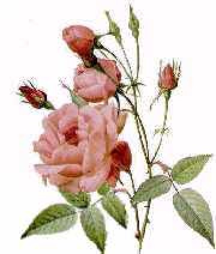

back to Paul's Poetry Page
back to Paul's Poetry Page|
I had always thought them overrated after all I gave you a dozen after our big fight and you barely looked at them until they were withered and colorless and then you thought I was so sweet for giving you this bundle of dead plants. It must be me an uncultured white rose so out of place in a world of color and protocol. every thorn I've grasped with bloody hands has reminded me that my words are only modulated noise. I could never give you the correct time of day but I can always give you roses. Paul David Mena 14 November, 1996 Acton, MA
|
 |
back to Paul's Poetry Page